William Loo
Some pictures were shot with a similar view and common points of interest. Here are two pictures that I am starting with.
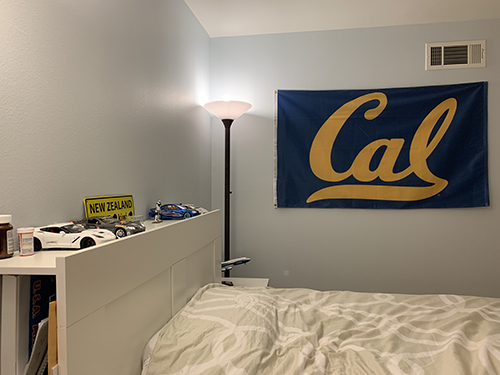 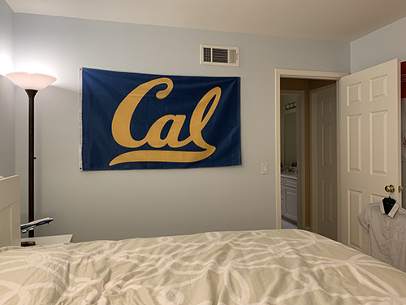
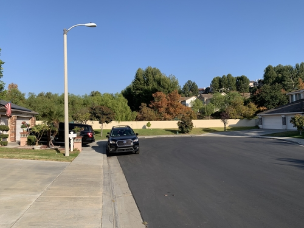 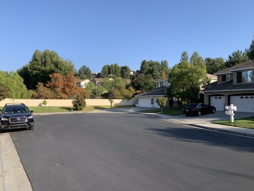
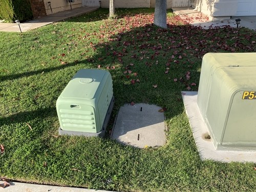 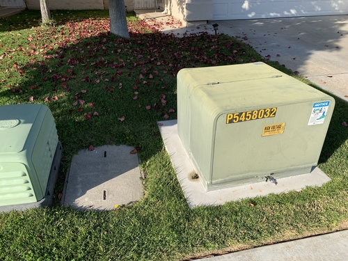
Before warping the images together, I need to recover the homography transformation between points in this image. Here is an example showing where I placed my keypoints for now.
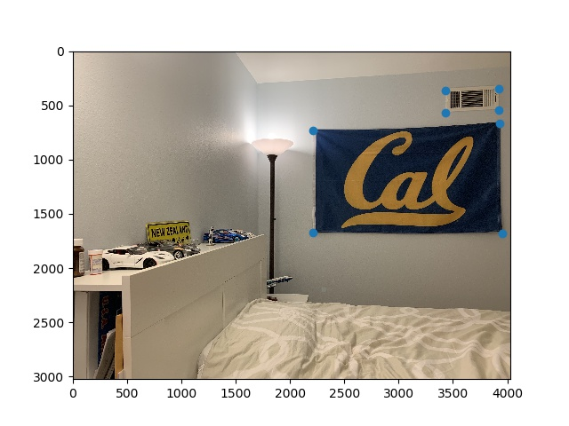 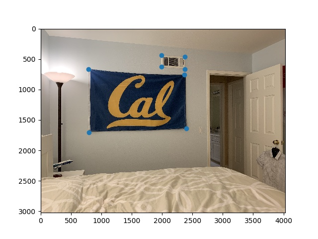
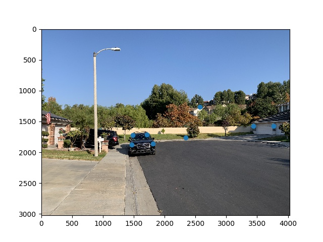 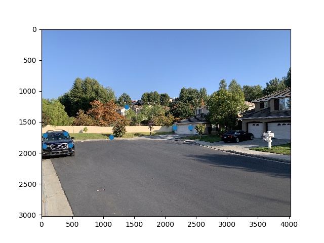
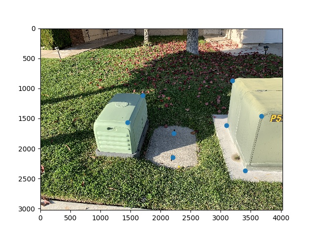 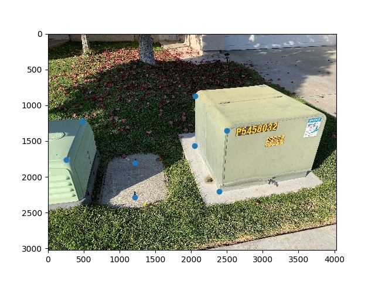
To recover the homography, I used the least squares approach to best match the transformation to the points.
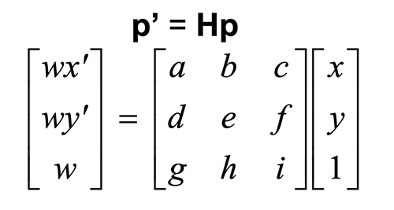
In particular the below formula helped me generate the A (2Nx8) and b (2Nx1) marices in order to get the H matrix.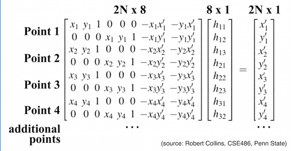
In order to ensure that the homography is working, I did some rectification operations on sample images to view selected planes in the frontal-parallel plane, meaning the plane is warped into a rectangle. Here are some examples:
Rectify to Cal Flag.
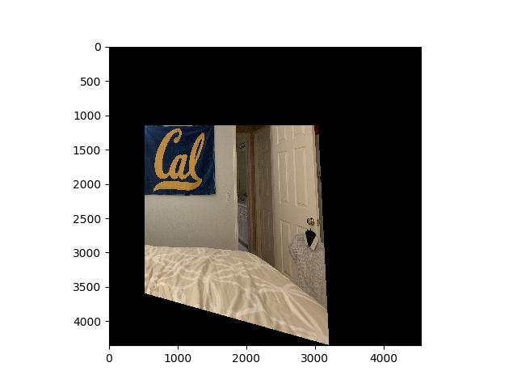
Rectify to Chalk Board.
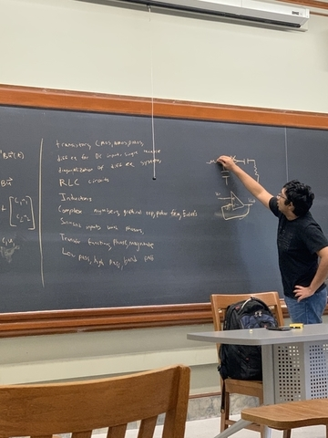 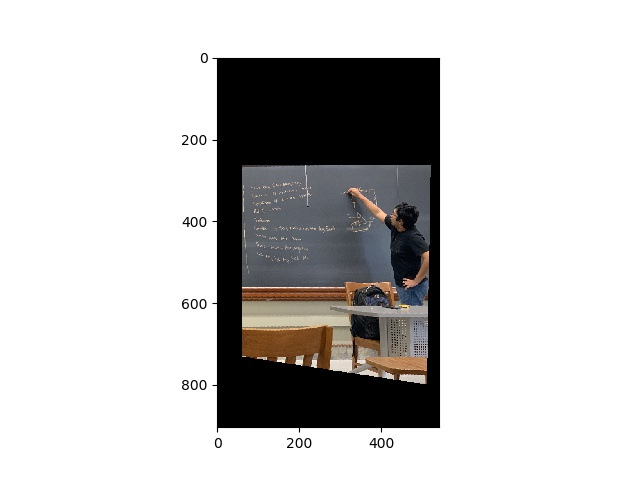
Rectify to Power Transformer.
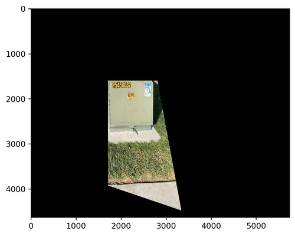
With warping working as expected, the next goal is to blend two images into a mosaic. The procedure is as follows after taking the homography:
Here are some results of blending the source images from above:
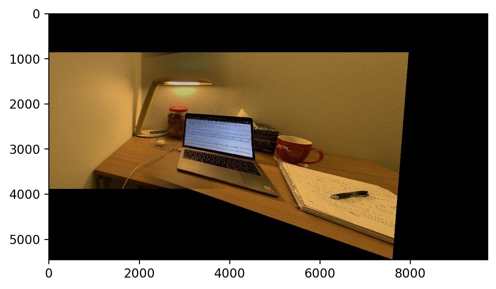
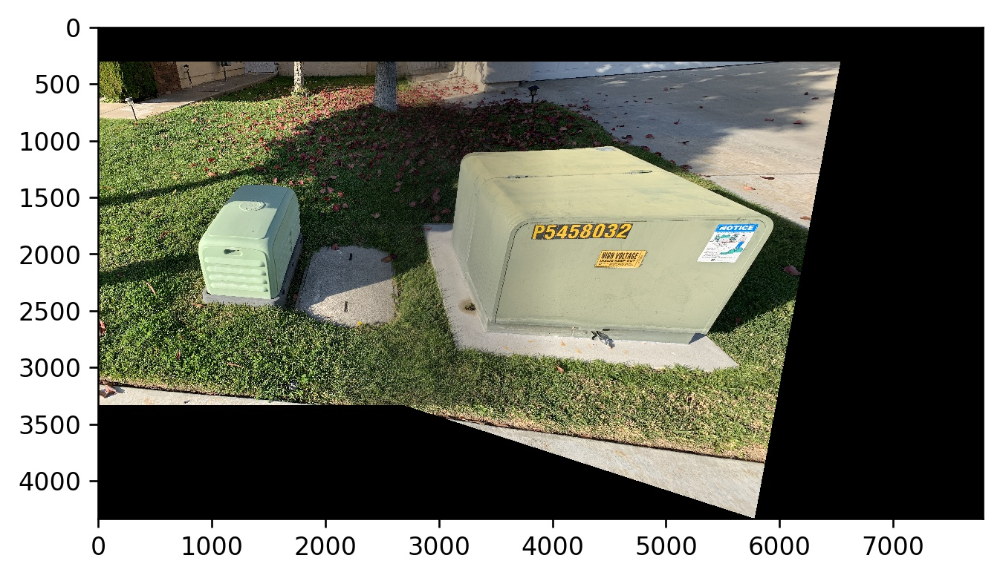
There were some color differences due to lighting differences from different angles, so there were some sharp edges observed if insufficient care was put into selecting the right keypoints. The last mosaic of the street had many noninteresting features where I wasn't sure where to place the points, so let's improve the result (hopefully) by using automatic keypoint selection.It was tough at first trying to wrap my head around how a homography is derived, but the result of understanding how correspondence points can create image transformations. I first noticed an application of homographies on 360 degree backup camera systems for some high-end cars, and now I understand how they are created.
In this section, I implement automatic keypoint selection based on Multi-Image Matching using Multi-Scale Oriented Patches” by Brown et al.
Here is the result of running the Harris corner detection algorithm on an input image:
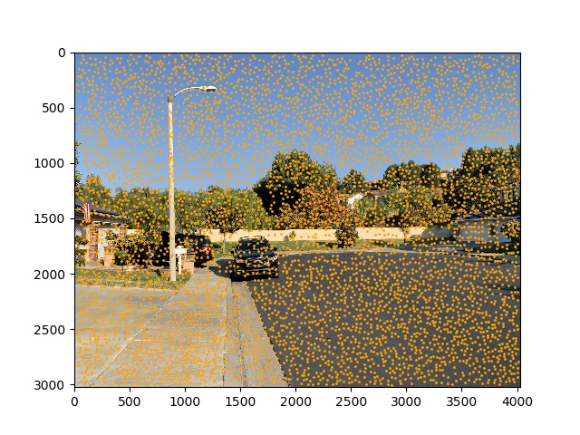
The above image looks a bit crowded doesn't it? This is where Adaptive Non-maximal Suppression (ANMS) comes in. As the MOPS paper mentions, the computational cost of matching points is superlinear in the number of interest points, so I can use ANMS to narrow down the number of interest points. The aim is to have only the strongest interest points, evenly distributed across the image. I compute the suppression radius for each point, and then sort the points by the radius and then take the top 500 interest points. Here is the result:
With less points, I can start sampling feature descriptors. I cut out 40x40 patches of the image centered around the interest points from above, downsample and normalize them into 8x8 axis aligned patches. Here is what a feature descriptor looks like:
Here is the result of what a feature descriptor looks like:
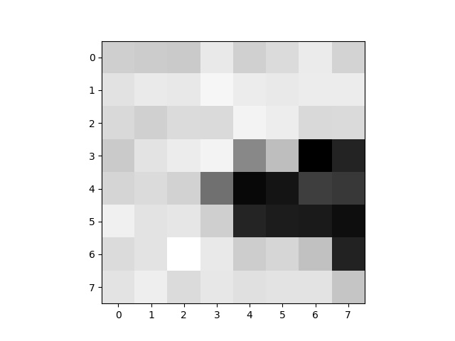
Finally, I match these features by taking the distance between every pair of feature samples. I can then find the nearest neighbor from the second set of features for the first set of features. I then compare the ratios between the distances of the two closest neighbors to perform outlier rejection. If the ratio is less than 0.5 then I move the point forward. Below is where the points end up after matching and filtering for one mosaic:
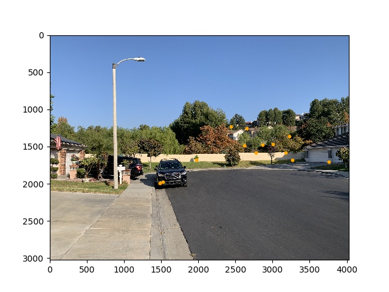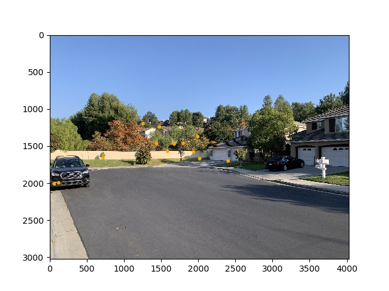
All of the steps above were really used to reduce the computational time of applying RANSAC. With a few strong candidates, I randomly sample 4 points using 4-point RANSAC over 1000 iterations. In each step, I compute a homography matrix using these 4 sample points and then apply the homography over all of the candidate points from the earlier part. I then count the points for which the error between the ground truth and estimated is less than 0.5, and if it is less, I count them as an inlier. After doing this sampling, I take the set of inliers and use them to calculate the (assumedly best) homography for warping.
Here are some results between manual and automatic keypoint selection (manual on left, auto on right). The result of the difficult case of the last mosaic is indeed improved with automatic keypoint selecion (note the less jarring blending).
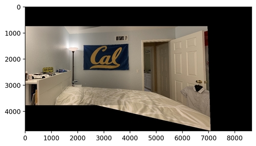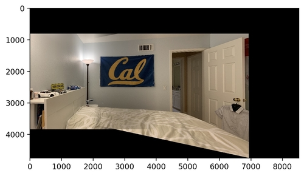
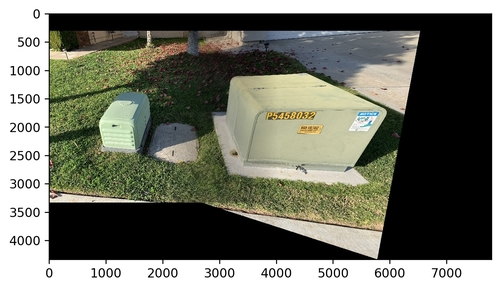
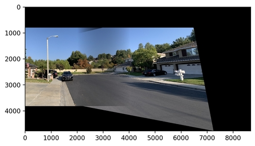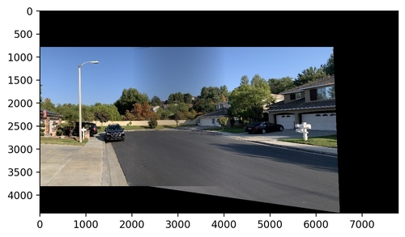
Given a pile of image data it's potentially expensive and difficult to sift through it all manually to find features. I found the part where I had to manually take patches and downsample them to be the most interesting because at that point I realized that this process of filtering harris corners will have a great impact on improving performance of feature detection automatically.